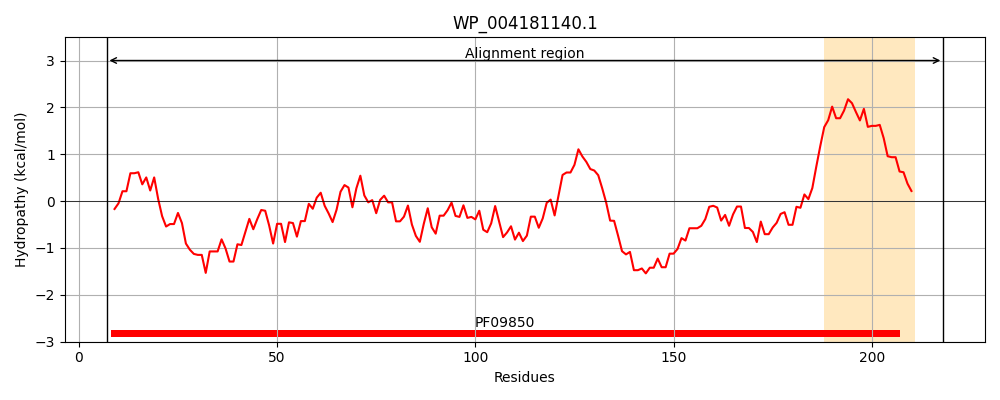
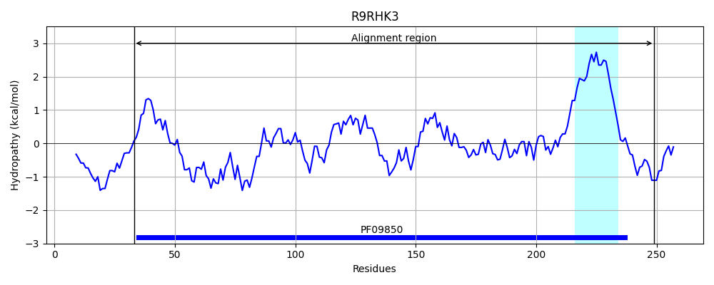
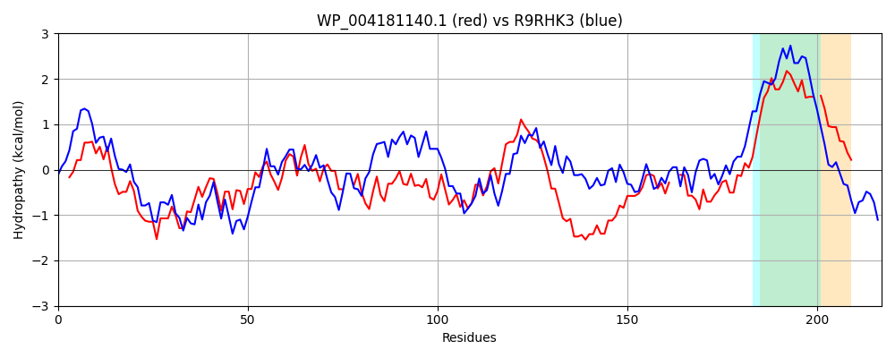

Hit Accession: R9RHK3
Hit TCID: 3.A.23.4.1
Hit Description: gnl|BL_ORD_ID|19833 gnl|TC-DB|R9RHK3|3.A.23.4.1 Putative transmembrane protein OS=Acinetobacter baumannii GN=tssL PE=4 SV=1
Mach Len: 217
e:0.000000
Query TMS Count : 1
Hit TMS Count: 1
TMS-Overlap Score: 0.950000
Predicted Substrates:CHEBI:8526;protein polypeptide chain, CHEBI:4291;deoxyribonucleic acid
BLAST Alignment:
Score: 187 , Bit scores: 76 bits, E-value: 6.9e-17, Alignment length: 217, Percentage identity: 27
Query: 7 IDIDVLLRDTFLTVVELRQGTSARHGQELYRHCLQQVEGVRERLTAAGFSQQDIEHITYAQCALLDETVLSRDVMD--DGQMVWLKNPLQSHFFNTLQAGELLYERMKRFLQEPAPTPAVLTCFHRVLLLGFRGRYQDPESDERQHLIAMFSKRVEPFRVQE--DSAVLNVPLTRRQHYLWQSPFCWLLLLMLVLVGVWW-GLHSWLNVLVDELLPT 218
I++ LL D F + +R Q L + ++ FS DI YA CAL+DET++++ + Q WL +PLQ F + AG +E +++ A L FH LLLGF+G+Y+ + HL+A ++ + ++ S +P R + PF W+L+ +L+ + + GL LN D+ L T
Sbjct: 33 INLIDLLHDGFYLIFLIRNQYVPADPQRFREKILDLLNRFEQQAKKLQFSADDIHDAKYAFCALIDETIVTQQDPSYFNLQNAWLISPLQLSLFGSQLAGYQFFEILEQLRSRGKDRLAALEVFHYCLLLGFQGKYRIESIESLNHLVARVGDEIDYLKGKKVAFSPFSAIPDQIRNIIHRELPFFWILIFLLIFALLTFAGLRFMLNNQNDKALST 249 | Protein Hydropathy Plots: |
|---|
|  |  |
Pairwise Alignment-Hydropathy Plot:
|
|---|
|  |